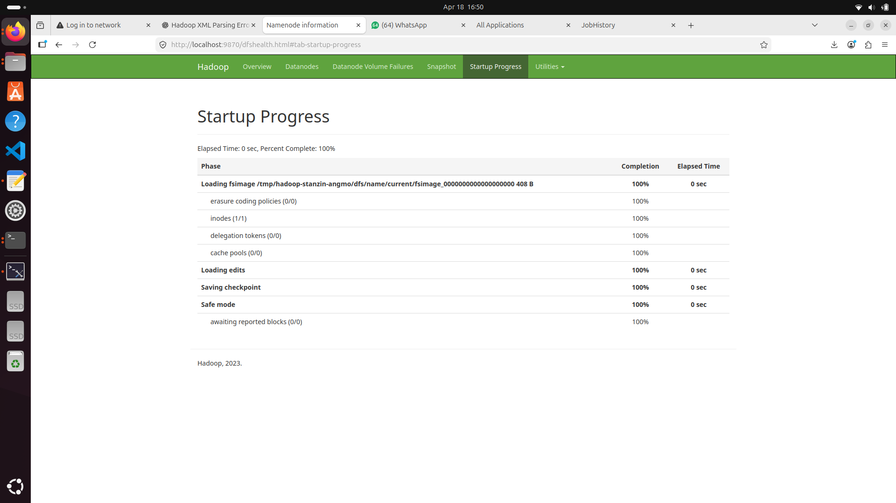
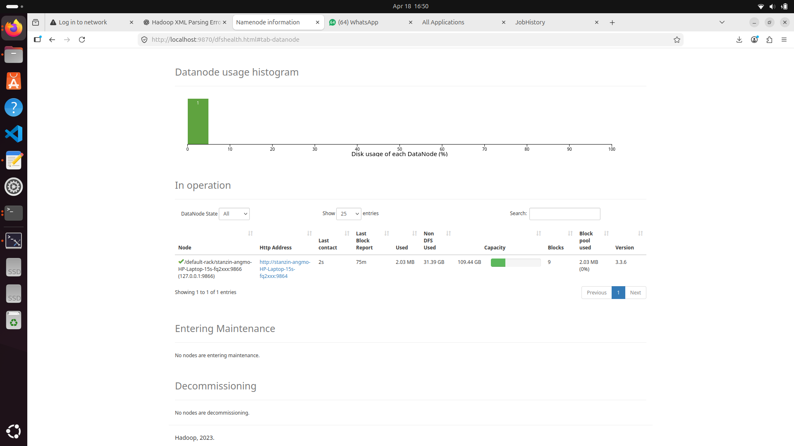
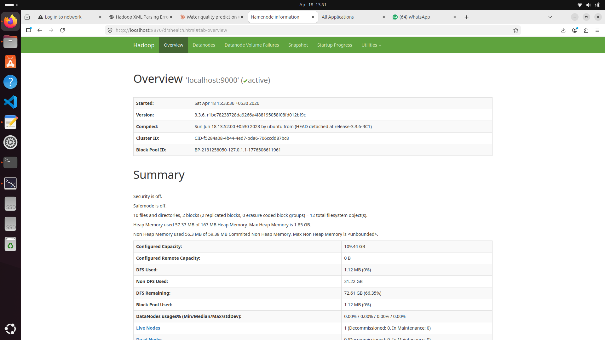
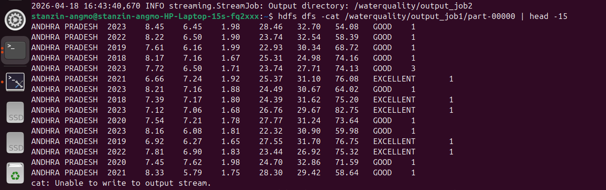
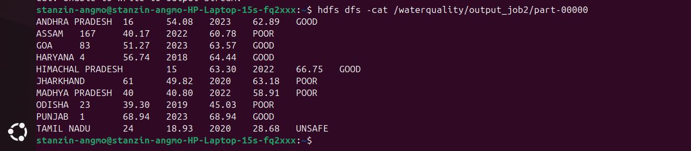
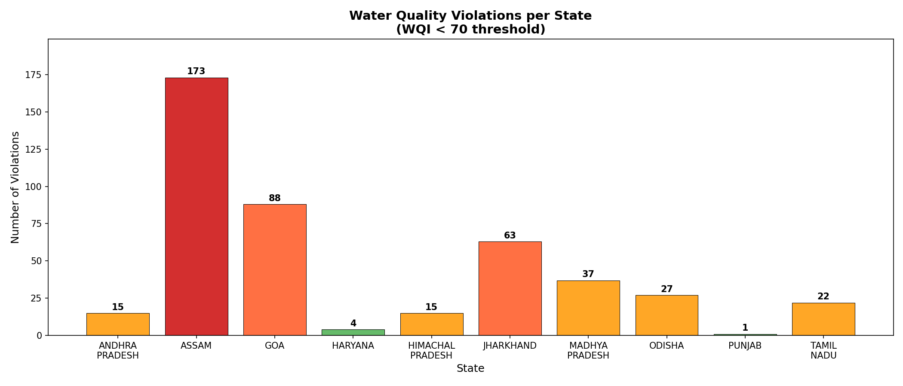
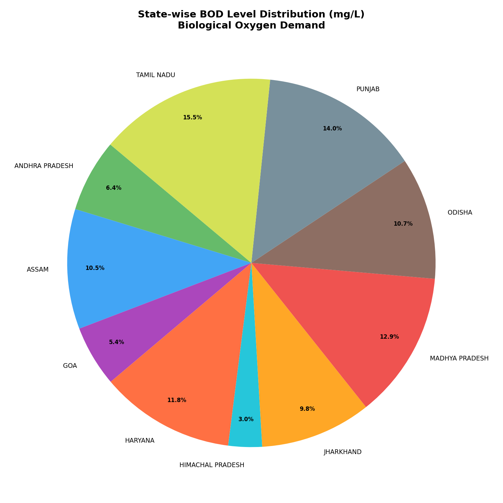

MapReduce & Analytics
This lab demonstrates a comprehensive Big Data processing pipeline using the Apache Hadoop ecosystem. It covers the setup of HDFS DataNodes, executing distributed MapReduce jobs on large-scale datasets, and visualizing the output data representing water quality violations.
The first step in our distributed architecture was initializing the Hadoop cluster daemons seamlessly.

Once started, verifying the active DataNodes and HDFS capacity is crucial for health monitoring.
The first step in our distributed architecture was setting up the Hadoop cluster, configuring the NameNode, and ensuring active DataNodes for HDFS storage layer reliability.

Processing the data involved writing Map functions to filter input streams and Reduce functions to aggregate violation counts across different states and zones.
public class ViolationMapper extends Mapper<LongWritable, Text, Text, IntWritable> { public void map(LongWritable key, Text value, Context context) { String[] columns = value.toString().split(","); if (columns[4].equals("VIOLATION")) { context.write(new Text(columns[1]), new IntWritable(1)); } } }



After the distributed processing completed, the aggregated output was queried using Hive and visualized via a charting pipeline to represent the findings intuitively.


Read or download the complete authoritative lab report for Big Data & Hadoop Processing below.